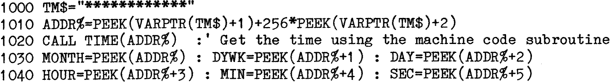

80-Bus News |
November–December 1982 · Volume 1 · Issue 4 |
| Page 33 of 51 |
|---|
EV Computing in Manchester have come up with a novel solution using the Gemini GM812 IVC card, where the video card Z80 is run under a new piece of software, and interrupts are created on the video card. This overcomes all the objections to running the RTC in an interrupt mode on the main Z80, and because their modification includes its own battery backed up RAM as well, allows preset messages to be generated as required. An ingenious solution, and one which may be retrofitted to the IVC card with little difficulty.
One method of display I have yet to investigate is to incorporate the clock routines within the keyboard routine. This is a compromise solution, as the clock would only be displayed whilst the keyboard was being scanned but not actually processing an incoming character. However, as the computer spends the vast majority of its time doing just that, the system should be quite effective. Naturally the clock display would freeze when other processing was taking place, for instance, whilst fetching and putting to disk, where the keyboard is no longer scanned, but I consider these as minor inconveniences, there are not many times in an evening where the processor does not look at the keyboard at least once within a ten second period. The only time I can think of is when assembling a large program, where the processor may be occupied for three or four minutes. I intend to display the time at the top right of the screen, but not to trap the top line so that the time can always be scrolled when, say, listing a program. Again, I do not think this will matter, as the display will be restored within one second of the screen display becoming stable.
My use for the clock has been in a computer logging system written in compiled Basic. Much as I like, and need the practice at machine assembler, I am sufficiently aware of my limitations not to take on a program which requires eight overlay programs, none of which is less that 14K of Basic source. The problem remained, however, of reading the clock from Basic. The clock updates its registers every tenth of a second, and indicates the update by changing the output of the registers from a four bit BCD number to the code 0FH. Trying to access the twelve registers via one port by outputting (using the Basic OUT instruction) to create the address, and cause and output strobe and then inputting the data from each register within one tenth of a second is impossible in straight Basic. I also doubt that compiled Basic would complete the task within the time allotted, as the compiler is not renown for producing efficient code. So the obvious approach was a USR type routine.
In Microsoft MBASIC the distinction between the USR and CALL user subroutines is finely drawn, although the CALL function is more appropriate when used compiled. The problem was to decide how to extract the data returned by the clock, when the Microsoft manual glosses over this rather vital point. It is also rather obscure about how to pass information to a machine code subroutine as well, although after careful reading and repeating the words slowly to myself, the technique was finally revealed. The final program was simple and straight forward, although how it works is another matter.
It all relies on making use of the way the strings are handled within the Basic. Anyone who has tried to investigate how the Microsoft Basic stores strings will have noted that the string space is allocated dynamically, that is, the string is put into a workspace and a three byte pointer is set up to point to the string and to supply the string length. This allows the strings to be shuffled about without having to reserve the maximum space for string manipulations. To save space further, any strings declared in the program, prior to use, are not copied into the string workspace, but are left exactly where they are within the Basic source, and a pointer is set to point inside the Basic source.
| Page 33 of 51 |
|---|